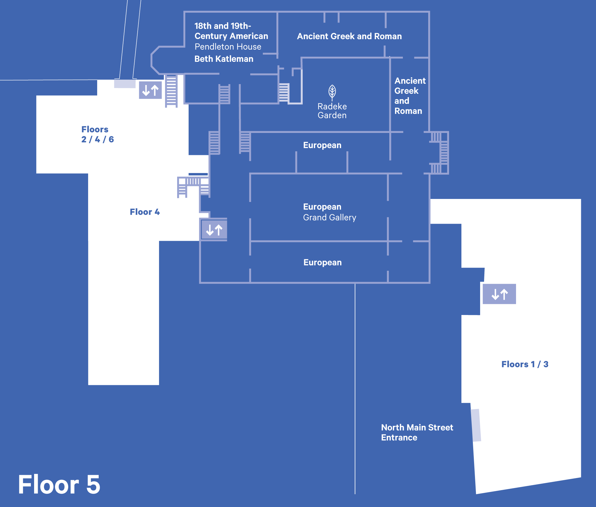
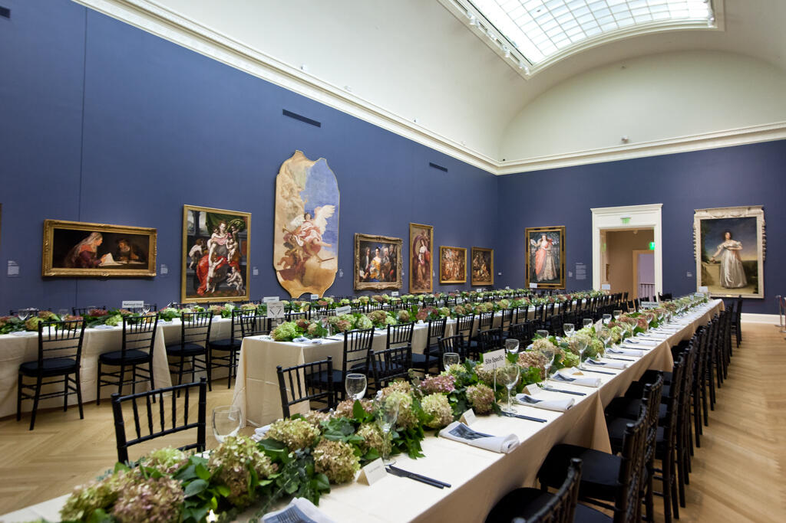
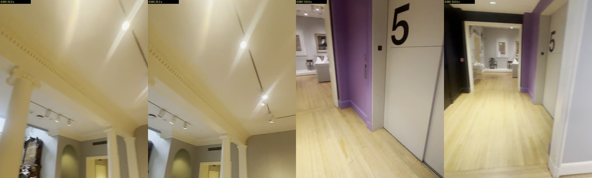
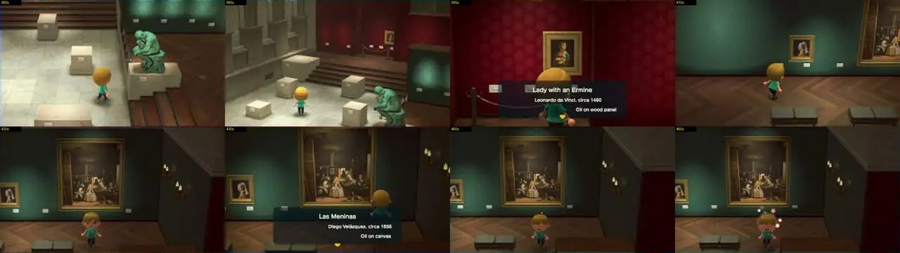

October1,2026. Primary museum and Nintendo references, compared with the original owner videos. No paid scraping or generation.
Source findings and limitations · Opus architecture comparison · Paper and emblem-book identity research

Historical visitor diagram, December2020 filename; topology only.

Historical event installation; preserve the existing Hall.

Chace Center ground floor; no filmed connecting route established.


Soft light pools, restrained grain, clear silhouettes and white labels. Visual observations only; no engine or shader claims.
Latest native Collection captures · Independent Opus review
Seven source corrections accepted in kind; five integration findings remain open. Existing Main Hall retained. Browser startup remains unverified.